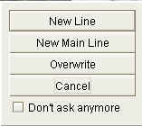

|
|
jose 1.4.1 |
|
This panel shows the chess board.

To make a move, simply click the piece with the mouse and drag it to the destination square.
Notice how the mouse cursor changes when you move it over a piece:

jose does not enforce the touch-move rule. You can always drop a piece back to its original square.
If you attempt an illegal move, an error sound will be played.
Alternatively, you can enter moves by typing text in the The Game Panel :

Type the move, then hit "Return" to execute it.
Right click inside the board panel to show the context menu:

Switch to the two-dimensional board
Switch to the 3D board
Turn around the board (white pieces on top).
Turn off the display of the board coordinates (at the left and at the bottom).
Copy the current position to the system clipboard.
r2q1rk1/1p4pp/2p1bp2/1n2p3/pQ6/P2P1NP1/4PPBP/1RR3K1 b - - 0 22
Paste a FEN position from the system clipboard. This command will invoke the The Setup Dialog .
You should take care that the system clipboard contains a valid FEN string, otherwise it will not produce a useful result.
Enter the current position in The Database Search Panel . You can then search the database for this position.
Open the Options Dialog . Among other settings, you can modify the colors and textures of the board.

To enter a variation line, just play the first move of the variation. jose will now ask you about inserting a new line:
If you check Don't ask, your choice will apply to all following variations. For example, if you choose New Line (and check Don't ask), all variation moves will automitically create a new line.
This option can be quite useful, but it might also become confusing.
Use Insert new Move to turn it off.
When a pawn reaches the eighth row (or if a black pawn reaches the first row) it must be promoted to an officer (Queen,Rook,Bishop, or Knight). Select the promotion piece from a popup menu. Or click outside the popup to cancel the move.
|
|
© 2002-2006 jose-chess.sourceforge.net |
|